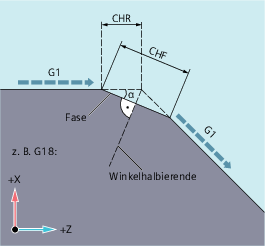
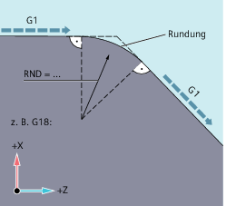
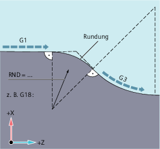

Konturecken innerhalb der aktiven Arbeitsebene können als Rundung oder Fase ausgeführt werden.
Zur Optimierung der Oberflächengüte kann für das Anfasen/Verrunden ein eigener Vorschub programmiert werden. Wird kein Vorschub programmiert, wirkt der normale Bahnvorschub F.
Mit der Funktion "Modales Verrunden" können mehrere Konturecken hintereinander gleichartig verrundet werden.
Konturecke anfasen:
G... X... Z... CHR/CHF=<Wert> FRC/FRCM=<Wert>G... X... Z...Konturecke verrunden:
G... X... Z... RND=<Wert> FRC=<Wert>G... X... Z...Modales Verrunden:
| G... X... Z... RNDM=<Wert> FRCM=<Wert> | |
| ... | |
| RNDM=0 |
| Hinweis |
Die Technologie (Vorschub, Vorschubtyp, M-Befehle ...) für das Anfasen/Verrunden wird abhängig von der Einstellung von Bit 0 im Maschinendatum MD20201 $MC_CHFRND_MODE_MASK (Verhalten Fase/Rundung) entweder vom Vorgänger- oder vom Nachfolgersatz abgeleitet. Empfohlene Einstellung ist die Ableitung aus dem Vorgängersatz (Bit 0 = 1). |
| Konturecke anfasen | |
| Länge der Fase (Maßeinheit entsprechend G70/G71) | |
| Konturecke anfasen | |
| Breite der Fase in der ursprünglichen Bewegungsrichtung (Maßeinheit entsprechend G70/G71) | |
| Konturecke verrunden | |
| Radius der Rundung (Maßeinheit entsprechend G70/G71) | |
| Modales Verrunden (mehrere aufeinanderfolgende Konturecken gleichartig verrunden) | |
| Radius der Rundungen (Maßeinheit entsprechend G70/G71) | |
Mit | ||
| Satzweise wirksamer Vorschub für Anfasen/Verrunden | |
| Vorschubgeschwindigkeit in mm/min (bei aktivem G94) bzw. mm/Umdr (bei aktivem G95) | |
| Modal wirksamer Vorschub für Anfasen/Verrunden | |
| Vorschubgeschwindigkeit in mm/min (bei aktivem G94) bzw. mm/Umdr (bei aktivem G95) | |
Mit | ||
| Hinweis |
Fase/Rundung zu großSind die programmierten Werte für Fase (CHF/CHR) oder Rundung (RND/RNDM) für die beteiligten Konturelemente zu groß, werden Fase oder Rundung automatisch angepasst:
|
| Hinweis |
Fase/Rundung nicht möglichKeine Fase/Rundung wird eingefügt, wenn:
|
| Hinweis |
FRC/FRCMFRC/FRCM wirkt nicht, wenn eine Fase mit G0 verfahren wird; die Programmierung ist entsprechend dem F-Wert ohne Fehlermeldung möglich. FRC ist nur wirksam, wenn im Satz eine Fase/Rundung programmiert ist bzw. RNDM aktiviert wurde. FRC überschreibt im aktuellen Satz den F- bzw. FRCM-Wert. Der unter FRC programmierte Vorschub muss größer Null sein. FRCM=0 aktiviert für das Anfasen/Verrunden den unter F programmierten Vorschub. Ist FRCM programmiert, muss äquivalent zu F der FRCM-Wert bei Wechsel G94 ↔ G95 usw. neu programmiert werden. Wird nur F neu programmiert und ist vor dem Wechsel des Vorschubtyps FRCM > 0, dann erfolgt eine Fehlermeldung. |
Beispiel 1: Anfasen zwischen zwei Geraden
|  |
|
Die Programmierung kann auf zwei Arten erfolgen:
Programmierung mit CHR
| Programmcode | |
|---|---|
| ... | |
| N30 G1 Z… CHR=2 FRC=100 | |
| N40 G1 X… | |
| ... |
Programmierung mit CHF
| Programmcode | |
|---|---|
| ... | |
| N30 G1 Z… CHF=2(cosα*2) FRC=100 | |
| N40 G1 X… | |
| ... |
Beispiel 2: Verrunden zwischen zwei Geraden
|  |
|
| Programmcode | |
|---|---|
| ... | |
| N30 G1 Z… RND=2 FRC=50 | |
| N40 G1 X… | |
| ... |
Beispiel 3: Verrunden zwischen Gerade und Kreis
Zwischen Linear- und Kreiskonturen in beliebigen Kombinationen kann durch die Funktion RND mit tangentialem Anschluss ein Kreiskonturelement eingefügt werden.
|  |
|
| Programmcode | |
|---|---|
| ... | |
| N30 G1 Z… RND=2 FRC=50 | |
| N40 G3 X… Z… I… K… | |
| ... |
Beispiel 4: Modales Verrunden zum Entgraten scharfer Werkstückkanten
| Programmcode | Kommentar |
|---|---|
| ... | |
| N30 G1 X… Z… RNDM=2 FRCM=50 | ; Modales Verrunden einschalten.Radius der Rundung: 2mmVorschub für das Verrunden: 50 mm/min |
| N40... | |
| N120 RNDM=0 | ; Modales Verrunden ausschalten. |
| ... |
Beispiel 5: Technologie vom Nachfolgesatz oder Vorgängersatz übernehmen
MD20201 Bit 0 = 0: Ableitung aus dem Nachfolgesatz (Standardeinstellung!)
| Programmcode | Kommentar |
|---|---|
| N10 G0 X0 Y0 G17 F100 G94 | |
| N20 G1 X10 CHF=2 | ; Fase N20-N30 mit F=100 mm/min |
| N30 Y10 CHF=4 | ; Fase N30-N40 mit FRC=200 mm/min |
| N40 X20 CHF=3 FRC=200 | ; Fase N40-N60 mit FRCM=50 mm/min |
| N50 RNDM=2 FRCM=50 | |
| N60 Y20 | ; Modale Rundung N60-N70 mit FRCM=50 mm/min |
| N70 X30 | ; Modale Rundung N70-N80 mit FRCM=50 mm/min |
| N80 Y30 CHF=3 FRC=100 | ; Fase N80-N90 mit FRC=100 mm/min |
| N90 X40 | ; Modale Rundung N90-N100 mit F=100 mm/min (Abwahl FRCM) |
| N100 Y40 FRCM=0 | ; Modale Rundung N100-N120 mit G95 FRC=1 mm/Umdr |
| N110 S1000 M3 | |
| N120 X50 G95 F3 FRC=1 | |
| ... | |
| M02 |
MD20201 Bit 0 = 1: Ableitung aus dem Vorgängersatz (empfohlenen Einstellung!)
| Programmcode | Kommentar |
|---|---|
| N10 G0 X0 Y0 G17 F100 G94 | |
| N20 G1 X10 CHF=2 | ; Fase N20-N30 mit F=100 mm/min |
| N30 Y10 CHF=4 FRC=120 | ; Fase N30-N40 mit FRC=120 mm/min |
| N40 X20 CHF=3 FRC=200 | ; Fase N40-N60 mit FRC=200 mm/min |
| N50 RNDM=2 FRCM=50 | |
| N60 Y20 | ; Modale Rundung N60-N70 mit FRCM=50 mm/min |
| N70 X30 | ; Modale Rundung N70-N80 mit FRCM=50 mm/min |
| N80 Y30 CHF=3 FRC=100 | ; Fase N80-N90 mit FRC=100 mm/min |
| N90 X40 | ; Modale Rundung N90-N100 mit FRCM=50 mm/min |
| N100 Y40 FRCM=0 | ; Modale Rundung N100-N120 mit F=100 mm/min |
| N110 S1000 M3 | |
| N120 X50 CHF=4 G95 F3 FRC=1 | ; Fase N120-N130 mit G95 FRC=1 mm/Umdr |
| N130 Y50 | ; Modale Rundung N130-N140 mit F=3 mm/Umdr |
| N140 X60 | |
| ... | |
| M02 |